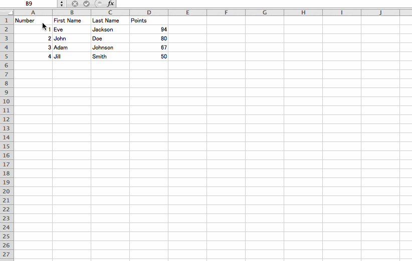

expaste
Parser for pasted data that is copied from spreadsheet on Excel and Google Drive

demo
ex.) Markdown output

usage
Vanilla
document.getElementById('input').addEventListener('paste', function (e) {
var ep = expaste.getDataByEvent(e);
// output style
var json = ep.toJSONStringify();
var csv = ep.toCSV();
var tsv = ep.toTSV();
var md = ep.toMarkdown();
// overwritten paste
this.value = md;
e.preventDefault();
}, false);jQuery
$('#input').on('paste', function (e) {
var ep = expaste.getDataByEvent(e.originalEvent);
// output style
var json = ep.toJSONStringify();
var csv = ep.toCSV();
var tsv = ep.toTSV();
var md = ep.toMarkdown();
// overwritten paste
$(this).val(md);
return false;
});